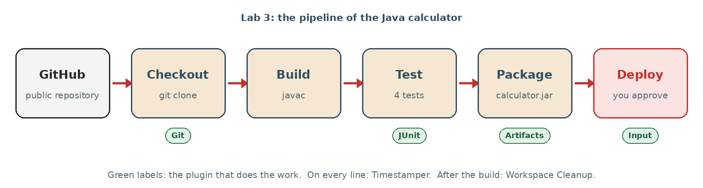

Lab 3 · Build a Java Project
Lab 3 – Build a Java Project
In this lab, Jenkins builds a real Java project stored on GitHub: it compiles the code, runs the tests, packages a .jar file and waits for your approval before deploying it. On the way you use six plugins.
Objectives
- Run a pipeline whose
Jenkinsfileis stored in a public GitHub repository (no token needed). - Read the results produced by plugins: JUnit (tests), Artifacts (files to download), Timestamper, Workspace Cleanup.
- Use build parameters and see an unstable (yellow) build.
- Write your own pipeline with a manual approval before deployment.
- Install a new plugin: AnsiColor.

Session plan (1h30)
- Meet the Java project (5 min)
- The Jenkinsfile line by line (15 min)
- Run it from GitHub (10 min)
- Plugins at work (10 min)
- Break the tests (10 min)
- Your own Java pipeline (25 min)
- Install a plugin: AnsiColor (10 min)
- Checklist and hand-in (5 min)
Before you start
- Jenkins is running and you can log in at
http://localhost:8080. - Lab 2 is done: you know New Item, Configure, Build Now and Console Output.
- The Git plugin is installed: when you create a Pipeline job, the SCM list offers Git.